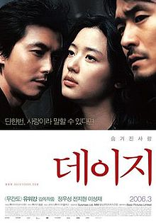
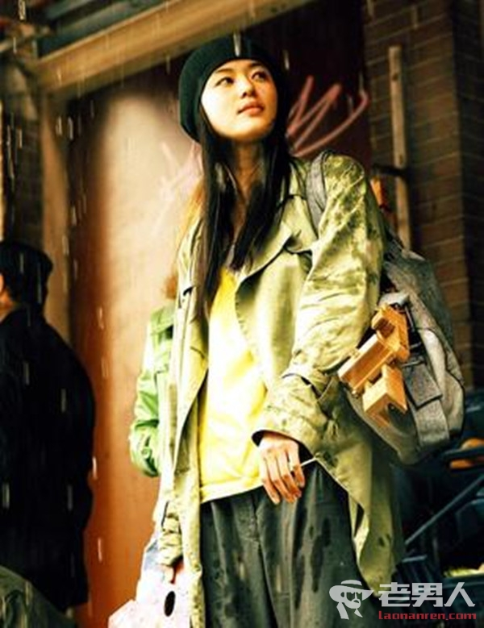
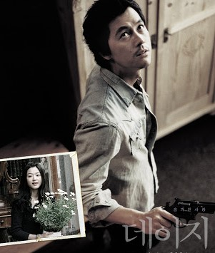
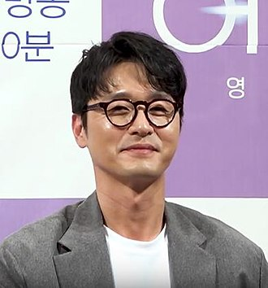

雏菊
雏菊
（韩语：데이지，英语：Daisy），由香港导演刘伟强执导的韩语动作及爱情电影。由iFilm制作，并于2006年3月9日在韩国电影院作首映。本电影有两个版本，分别是亚洲剪辑版和国际剪辑版。
故事讲述一个艺术画家、一个国际刑警和一个职业杀手之间发生的事。本影片在荷兰进行拍摄，尤其是在首都阿姆斯特丹、还有哈勒姆和Epen。

剧情简介
阿姆斯特丹，两个男人爱上了同一个女人，注定了一段纠缠的故事。惠瑛（全智贤饰）是画家，每天到广场帮路人画肖像，而像她一样风雨不改的，还有某人送来的一盘雏菊。每天雏菊总是准时送到，让她心里悸动而好奇。
一天，匆匆而过的正佑(李成宰
饰)遇上了画家。他本是国际警察，来这个城市追捕杀手，然而却迷上了温婉动人的惠瑛，他让惠瑛帮他描肖像，他们的爱情在萌发盛开。
这些情景，送花人看在眼里，痛在心里。他的身份注定了他必须给正佑让出位置，对惠瑛默默付出。因为，他就是正佑所寻找的杀手朴义(郑宇成
饰)。但是，强烈的爱终究让他不再躲在暗处，他决心争取幸福。二人在法律上，感情上的鲜明对立，注定了不能完满的结局，鲜血在惠瑛描有雏菊的花布上蔓延开来
演员阵容
-
全智贤
：（韩语：전지현，1981年10月30日－），韩国著名影视女演员、模特儿。15岁以时装杂志模特儿出道，2001年以韩国电影《我的野蛮女友》一跃成为韩国一线女星。2006年凭电影《爱无间》成为韩国身价最高的女演员。2009年，凭《血战：最后的吸血鬼》进军好莱坞。2014年，以SBS电视剧《来自星星的你》攀上演艺事业巅峰。2015年，主演电影《暗杀》，该片韩国国内观影人次突破1270万，为2015年韩国电影票房第二位。2016年，与李敏镐主演SBS电视剧《蓝色海洋的传说》，演技及收视率表现获得一致好评。她和宋慧乔、李英爱、金泰希并称广告界四大女王，并与金荷娜、河智苑、宋慧乔、孙艺珍并称韩国当家花旦。
-
郑雨盛
:（韩语：정우성，1973年3月20日－），韩国男演员，因为外表俊朗健硕，所以演绎的多是坚韧强悍的角色。高中时为了实现演员梦想而辍学，在访问中他表示，对此决定没有任何的遗憾。
-
李成宰
：（이성재、Lee
Sung-Jae），1970年8月23日出生于韩国，毕业于韩国东国大学电影演剧系，韩国男演员。
1995年，参演处女作《两个女人的爱》。1998年，凭借爱情片《美术馆旁的动物园》获得第36届韩国电影大钟奖最佳新人男演员奖和第35届韩国百想艺术大赏最佳新人男演员奖。1999年，凭借动作犯罪片《加油站被袭事件》获得第20届韩国电影青龙奖最佳新人男演员奖和第36届韩国百想艺术大赏最佳人气男演员奖。2004年，远赴加拿大拍摄冒险爱情片《冰雨》。2006年，与导演刘伟强联手合作爱情片《雏菊》
[1-2] 。2011年，主演韩国首部3D历史传记片《弦之歌》 [3-8]
。2013年，主演家庭悬疑剧《可疑的保姆》 [9-10]
。2016年，出演JTBC电视剧《魔女宝鉴》
角色介紹
女画家慧英。她本来是一个乐观进取的女孩，但是被警官李成宰和杀手郑宇成同时爱上，也让慧英原本简单的世界变得复杂起来，成为了一个忧郁、悲情的女子。
活在刀尖上讨生活的杀手，从第一眼看到慧英的那一刻起，就深深地被这个美丽的女子所吸引，但身上所背负的诸多命案却又让他不得不过着暗无天日的生活，这注定了在爱情的道路上，他走得不会平坦。因为自己的特殊身份，他只能把这份爱放在心底，远远地注视着慧英，默默地为她付出。
刑警，某次任务，他随手的一盆雏菊让慧英误以为是他。本来他是利用慧英观察罪犯，但他却渐渐爱上了纯真善良的慧英，有白鸽飞过的广场上，慧英一笔一笔，勾勒着爱的轮廓……明知道慧英错把自己当成了别人，可是因为自己爱着慧英，却将真相埋藏心底
上映時間
（韩国）2006年3月9日
（香港）2006年4月13日
（台湾）2006年4月21日
（新加坡）2006年4月27日
（马来西亚）2006年4月25日
（日本）2006年5月27日
（中国大陆）2006年4月30日